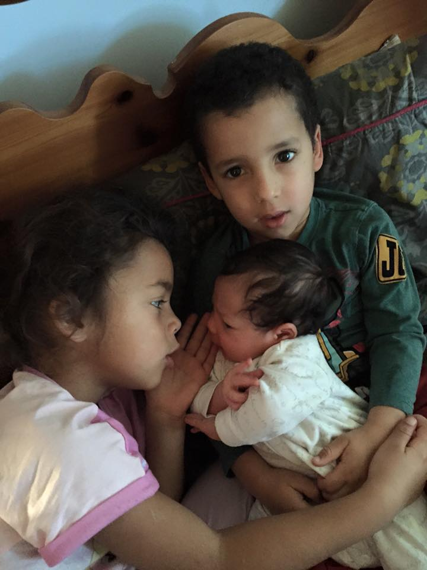

This blog is about life in the Anderson household. We are a family of 5 which includes my husband, our two daughters Olivia and Eleanor, our son Zachary and of couse me.
I met Jermaine in 1998 at University in Birmingham. We got married 10 years later.
On 30th January 2010 our lives were turned upside down by the arrival of our first child. Olivia made a rather dramatic entrance and this tiny persons impact on us was huge. She did not come with an instruction manual which caused us a lot of confusion in the first few months! This however was just the beginning. Next to come was Zachary, then Eleanor. This was when Jermaine and I became outnumbered!
